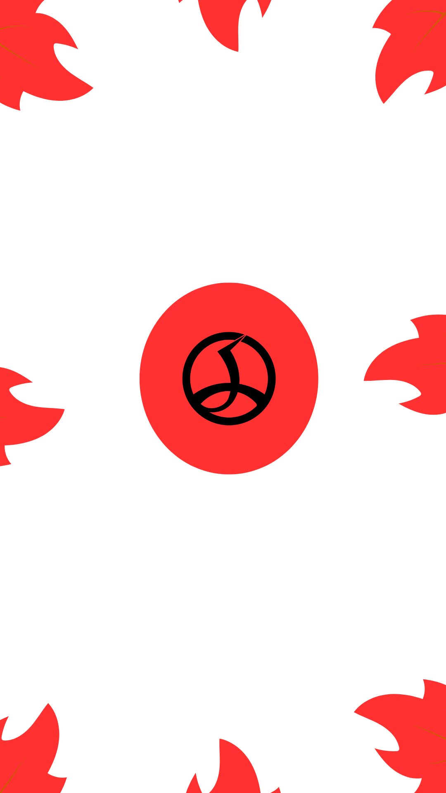
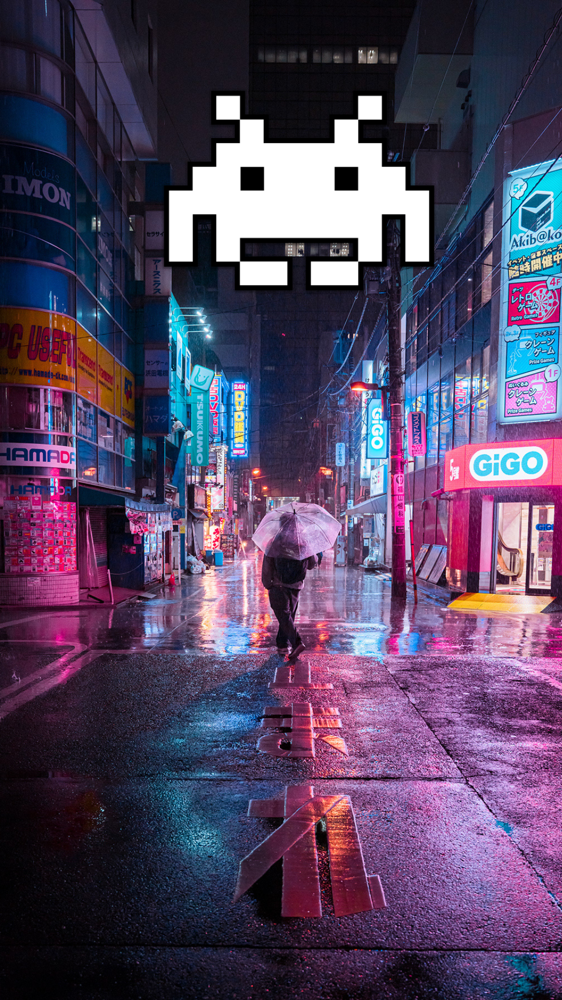
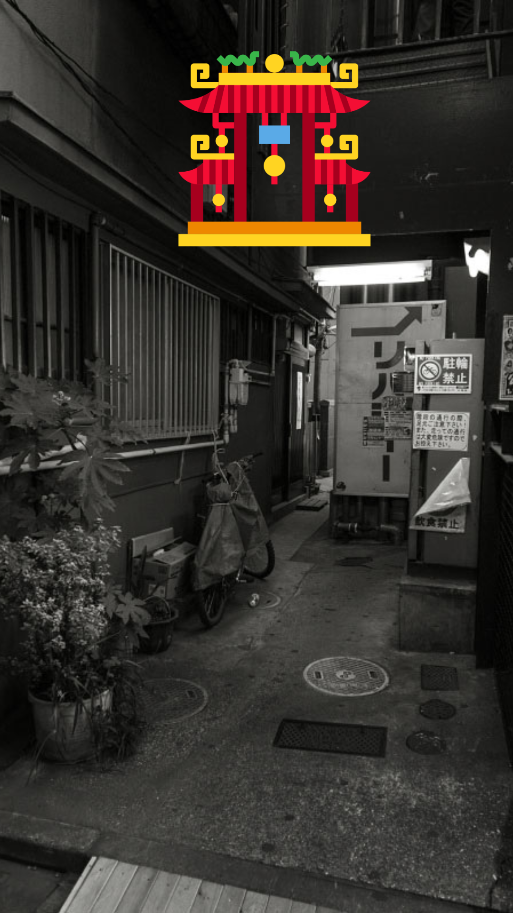

Akihabara: A Cidade Elétrica
͏ ͏ ͏ ͏ ͏ ͏ ͏ ͏ ͏História ͏ ͏ ͏ ͏ ͏ ͏ ͏ ͏ ͏
͏ ͏ ͏ ͏ ͏ ͏ ͏ ͏ ͏ ͏ ͏ ͏ ͏ ͏ ͏ ͏ ͏ ͏ ͏͏ ͏ ͏ ͏Curiosidades
͏ ͏ ͏ ͏ ͏ ͏ ͏ ͏ ͏ ͏ ͏ ͏ ͏ ͏ ͏ ͏͏ ͏ ͏ ͏ ͏ ͏ ͏ ͏Pontos Turísticos


